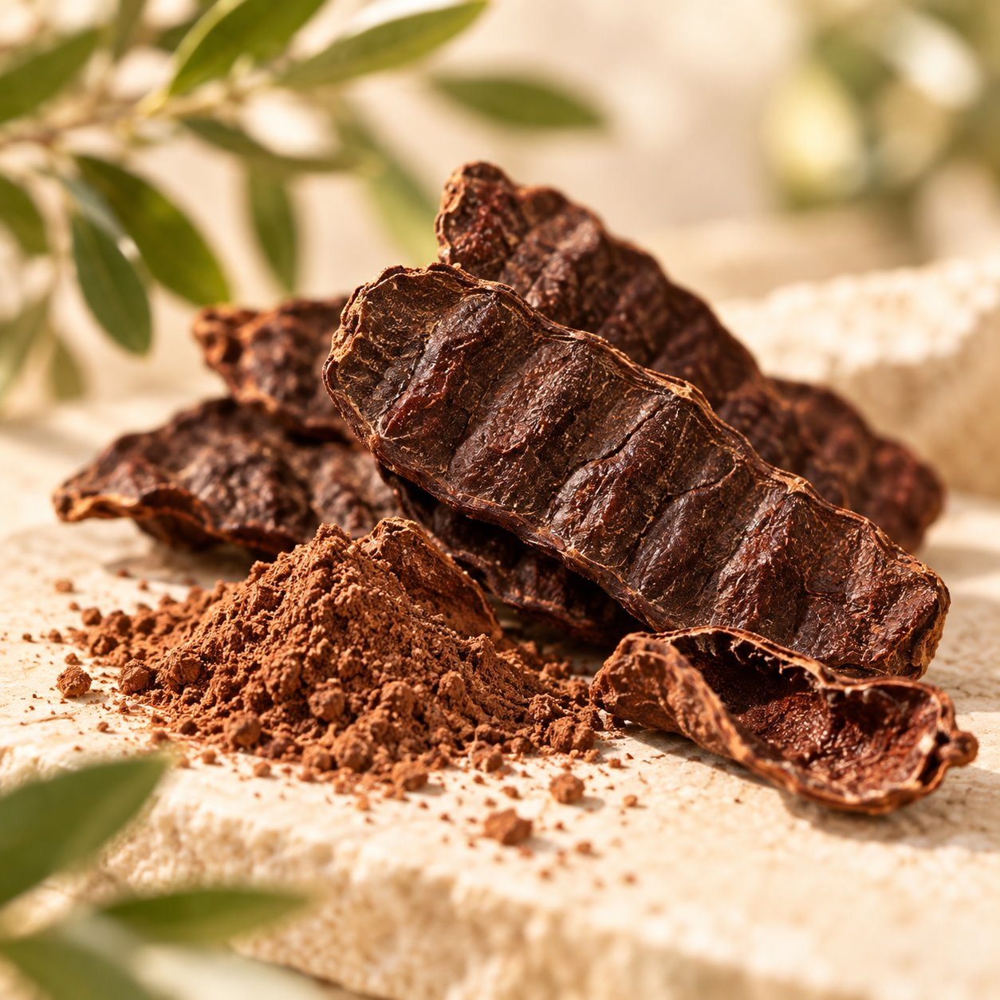
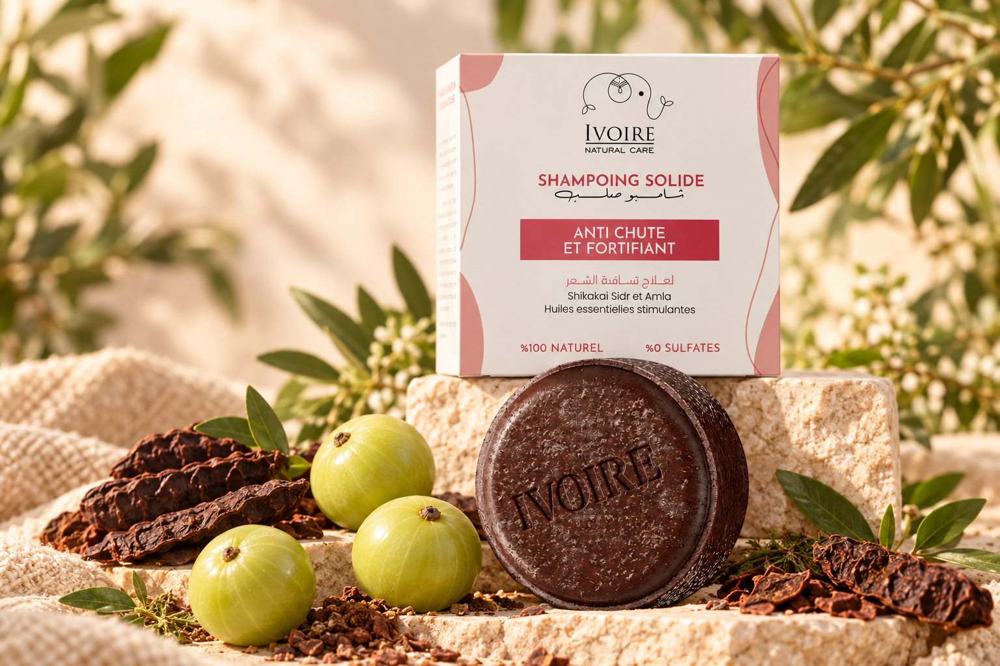
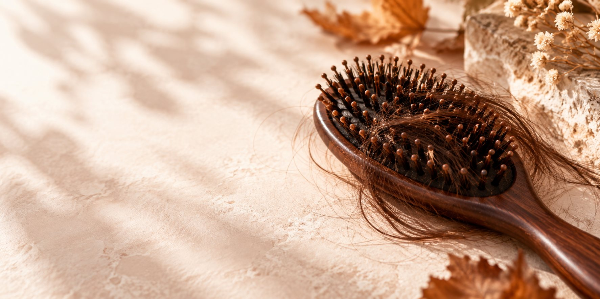
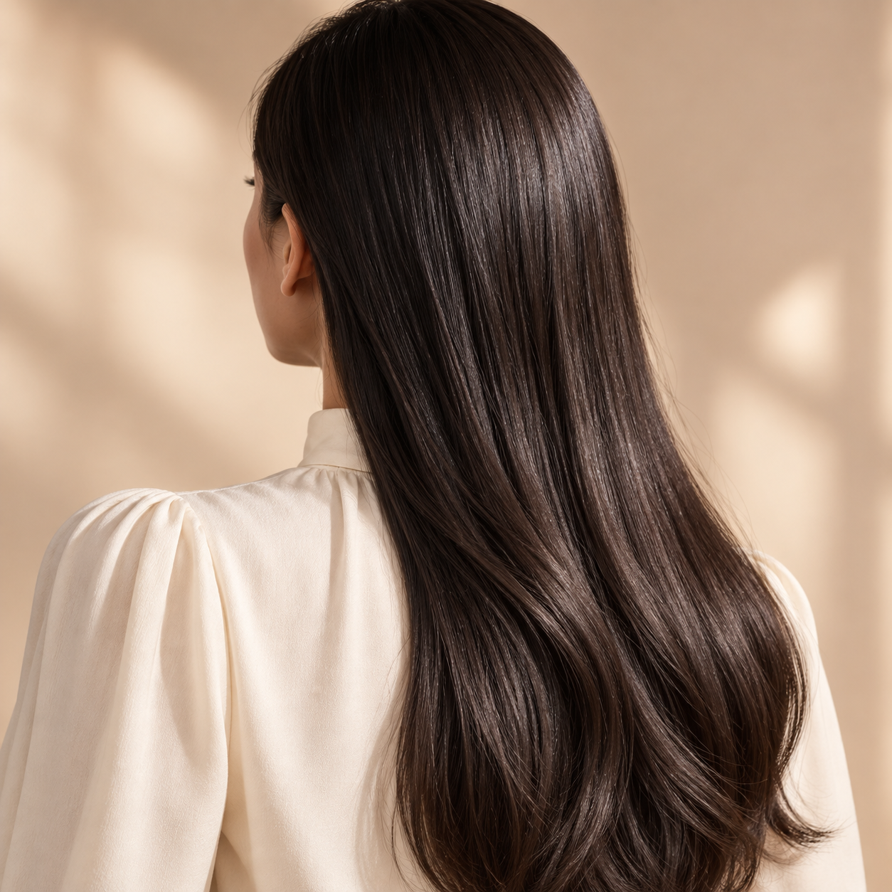
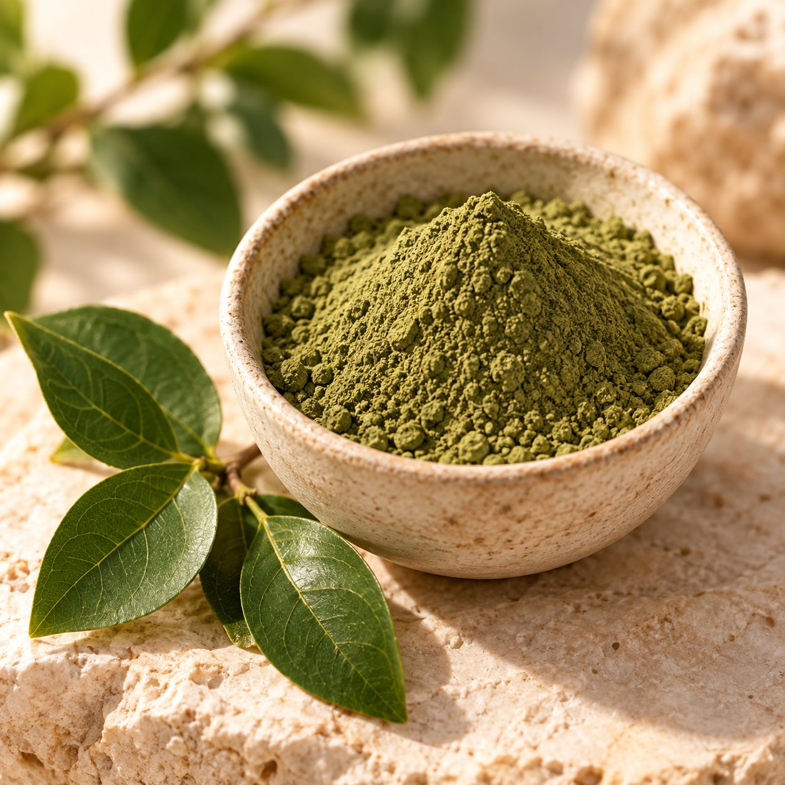
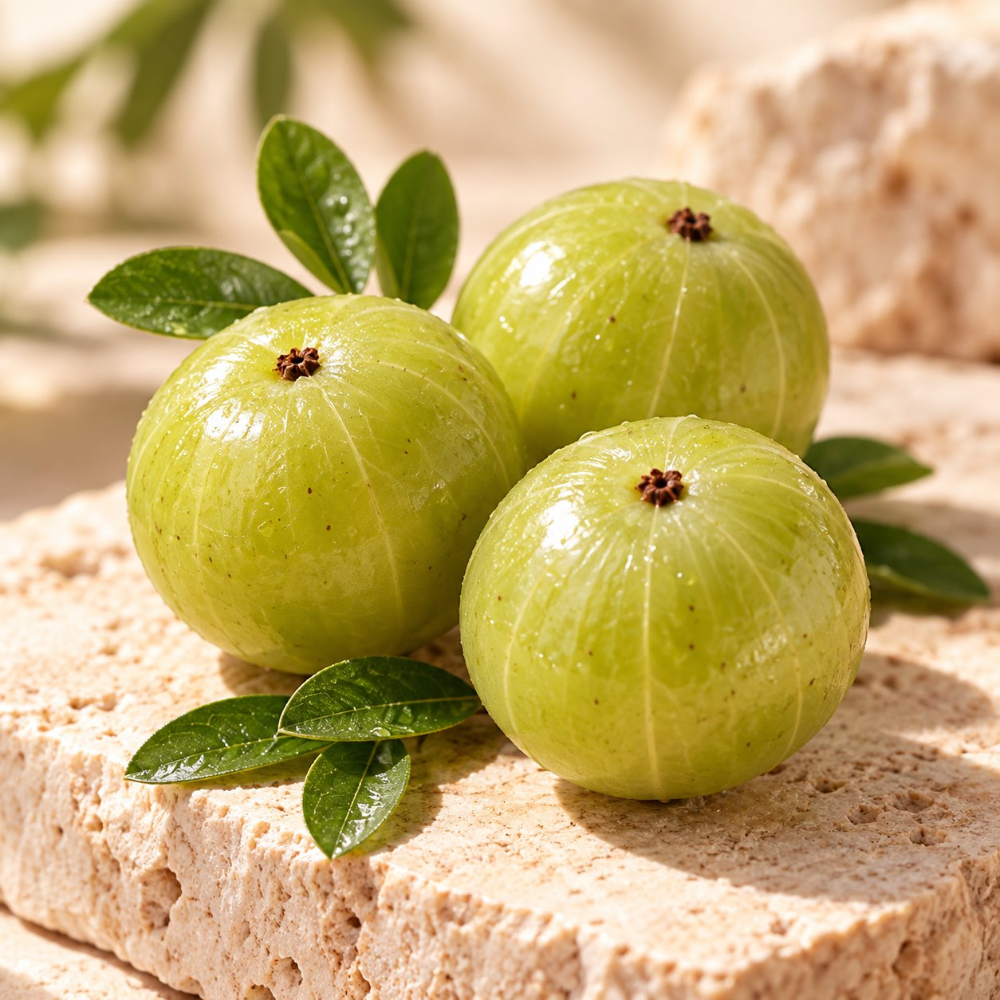
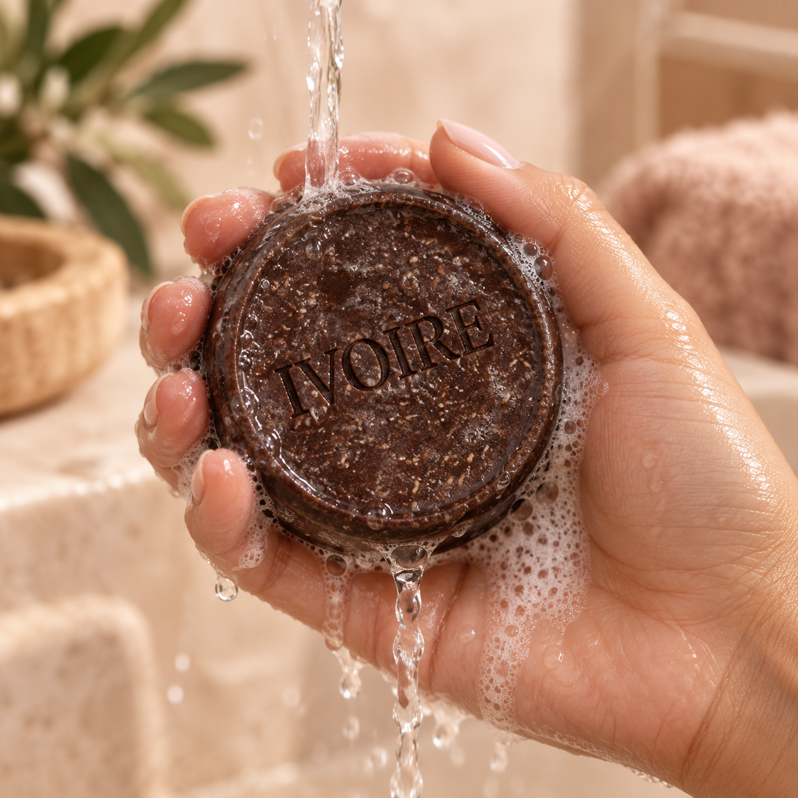
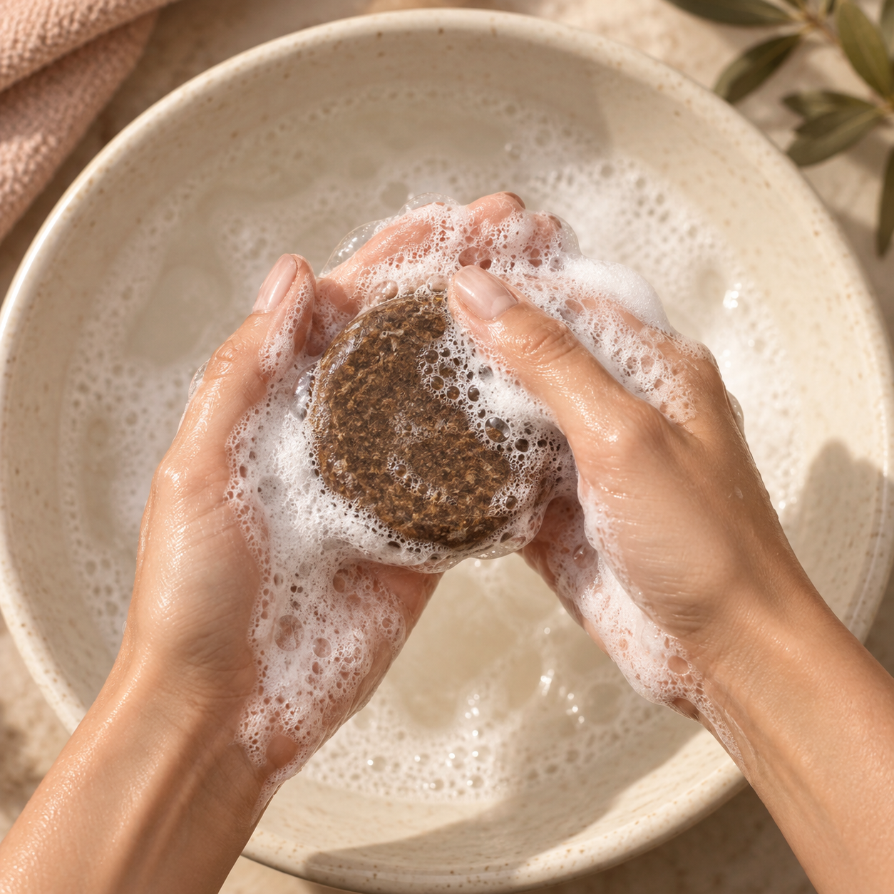

Shikakai
Un nettoyant végétal traditionnel pour prendre soin des cheveux en douceur.
SHAMPOING SOLIDE ANTI-CHUTE
Un rituel simple pour prendre soin des cheveux fragilisés. Shikakai, sidr et amla réunis dans un shampoing solide, doux et sans sulfates.

AU FIL DES SAISONS
À certaines périodes de l’année, les cheveux peuvent sembler plus fragiles et la chute plus visible. C’est le moment idéal pour adopter une routine douce, pensée pour prendre soin de votre cuir chevelu.
Découvrir les ingrédients
L’ESPRIT IVOIRE
Quand les cheveux deviennent plus fragiles, le bon geste commence par une routine adaptée. Ivoire associe la simplicité d’un shampoing solide à trois ingrédients végétaux appréciés dans les soins capillaires.
Découvrir notre formule
LES INGRÉDIENTS
Trois essentiels au service de votre routine capillaire.

Un nettoyant végétal traditionnel pour prendre soin des cheveux en douceur.

Apprécié dans les rituels capillaires pour la douceur qu’il apporte au cuir chevelu.

Une baie emblématique, associée à l’éclat et à la brillance des cheveux.
MODE D’EMPLOI
Quelques gestes suffisent pour retrouver le plaisir de prendre soin de vos cheveux.

01Mouillez vos cheveux et le shampoing solide.

02Frottez délicatement entre les mains ou sur le cuir chevelu.
Massez, rincez et profitez de votre nouvelle routine.
01 / VOTRE NOUVEAU RITUEL
Shampoing solide Ivoire · Anti-chute & fortifiant · 950 DA
À SAVOIR
Mouillez vos cheveux et le shampoing. Faites mousser entre les mains ou sur le cuir chevelu, massez doucement puis rincez.
Le produit met en avant le shikakai, le sidr et l’amla. Consultez l’emballage pour la composition complète.
L’emballage fourni indique « 0% sulfates ».
Vous pouvez choisir un point de retrait ou une livraison à domicile. Les frais et la disponibilité seront confirmés avant validation.